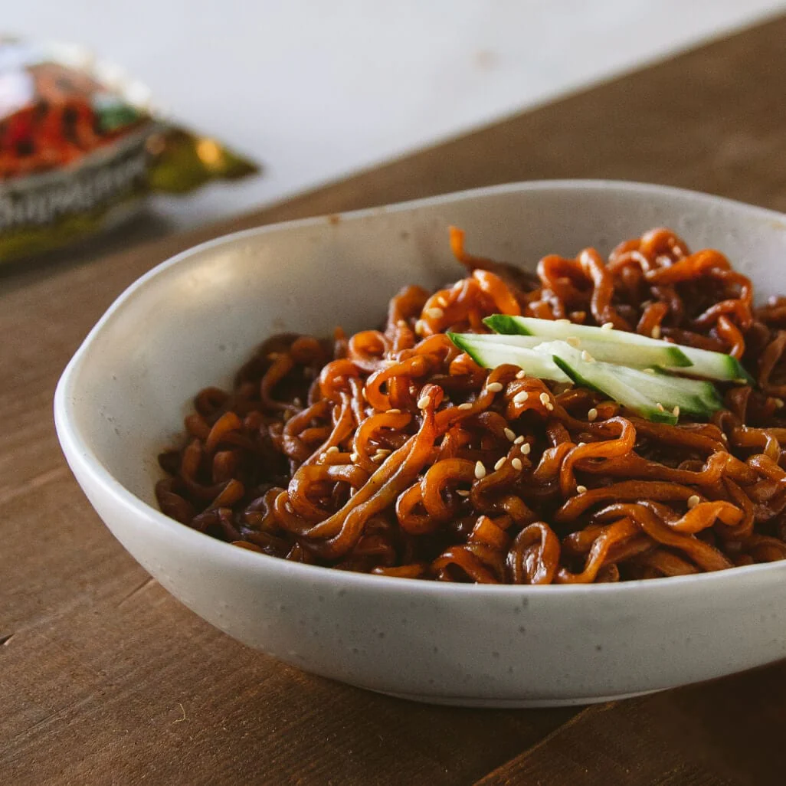

Chapagetti

Description
This dish is considered an instant dish, being able to purchase this at a local
convenience store. Although cheap, if done right, can taste just as good as a
homemade dish.
Ingredients
- Chapagetti package
- Cucumber
- Sesame seeds
- Pepper flakes
Steps
- Cook the noodles and vegetable flakes for 3-4 minutes in boiling water
- Strain the noodles from the water
- Stir fry the noodles, powder packet, and vegetable flakes on a pan
- Put pepper flakes into the mixture once finished stir frying
- Once done, cut a cucumber into thin, vertical slices
- Put the chapagetti into a bowl and slices of cucumber on top
- Spray sesame seeds on top and enjoy!
Home